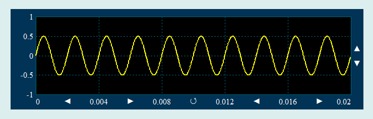

PlotFast二维曲线控件是一个简化版的Plot控件，主要用于信号采集等需要实时滚动显示信号波形、频谱等场合。这时，若用Plot控件，程序运行可能会卡顿：

在Python程序GUI界面中创建一个PlotFast二维曲线控件的命令为:
hl=dr.DRPlotFast(win,x,y,w,h,cb1,cb2,cf1,cf2,cf3,fontsize,xmin,xmax,ymin,ymax,dy,ydata)
其中hl是创建时用户设定的变量名。注意PlotFast不支持自动量程，xmin,xmax,ymin,ymax必须设为实值。当dy和ydata设为零，则初始曲线为空。PlotFast二维曲线控件有2个属性函数。
hl.setValue2DX(dy,y)#以覆盖形式绘制曲线
hl.setValue2D(x,y)#以覆盖形式绘制曲线
PlotFast二维曲线控件继承至Tkinter的Canvas控件，必要时可参阅相关资料。
.